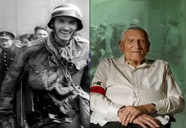
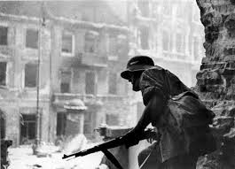
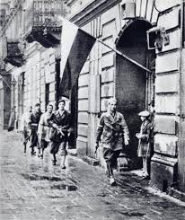

Polskie powstania narodowe
Polskie powstania narodowe
 Główną przyczyną powstania było pragnienie wyzwolenie stolicy spod pięcioletniej niemieckiej niewoli. Zbliżanie się Armii Czerwonej i wycofywanie się wojsk Hitlera stało się dla dowództwa Armii Krajowej przyczyną do wydania decyzji o walce z okupantem. Samodzielne wyzwolenie miasta miało także zapobiec ewentualnym roszczeniom ZSRR w przypadku uwolnienia Warszawy przez Związek i być wyrazem oporu wobec komunistycznego Polskiego Komitetu Wyzwolenia Narodowego. Inną przyczyną było to, iż alianci obiecywali uwzględnienie AK w dostawach broni dla Rosjan. Po otrzymaniu informacji, iż wojska radzieckie zajęły Radość, Radzimiń, Wołomyń i dotarły do Pragi zapada ostateczna decyzja. 31 lipca płk Antoni Chruściel (ps. „Monter”) ogłasza rozpoczęcie powstania na tzw. Godzinę „W” (wybuch bądź wolność), czyli na 1700 dnia następnego. W tym czasie wielu mieszkańców wraca do domów, co wzmaga ruch uliczny. Ma to ułatwić żołnierzom wtopienie się w tłum oraz daje czas na opanowanie wyznaczonych celów. Pomimo tych przygotowań walki rozpoczynają się wcześniej – na Żoliborzu już o 13:50, ale także na Woli i w Śródmieściu.
 Ludność Warszawy przyjmuje powstanie z entuzjazmem. Pojawia się szansa na długo wyczekiwaną wolność. Z ulicznych głośników płynie „Warszawianka” bądź niedawno powstała piosenka „Warszawskie Dzieci”. Pojawiają się biało-czerwone flagi. Wokół rozbrzmiewa ojczysty język. W tych okolicznościach słychać też radosne nowiny o opanowaniu przez powstańców w pierwszych dniach walk Śródmieścia, Starego Miasta, Woli, Powiśla, Mokotowa, Żoliborza oraz części Ochoty. Jednakże, już 2-ego sierpnia załamuje się zryw na Pradze, silnie obsadzonej przez przyfrontowe jednostki niemieckie. Także wiele ważnych obiektów wciąż pozostaje w rękach wroga. Następuje silne uderzenie wojsk przeciwnika, który już 11 sierpnia, po zdobyciu Woli i Ochoty, atakuje Stare Miasto przy użyciu lotnictwa, ciężkiej artylerii, pocisków rakietowych (tzw.„krów” lub „szaf”). Zabytkowa dzielnica miasta w wyniku nieustającego ostrzału zostaje zamieniona w gruzy i ostatecznie zdobyta przez wojska okupantów 2 września. Udaje im się także opanować Powiśle, jednak 13 września na tereny Pragi wkraczają wojska rosyjskie, które kończą operację następnego dnia. Przez kolejne dni krąg walczących ośrodków powstańczych oporu zawęża się do Żoliborza, Śródmieścia i Mokotowa. Zaczyna panować głód, powoli umiera wszelka nadzieja. Niedobór amunicji, bierna postawa sowieckiego sojusznika, brak pomocy ze strony aliantów, zbrojna przewaga Niemiec – to wszystko doprowadza do powolnego wygasania powstania. Stopniowo upadają ostatnie ośrodki walk.  27 września kapituluje Mokotów, 30 – Żoliborz. Komenda Główna Armii Krajowej podejmuje pertraktacje ze stroną przeciwną, które kończą się podpisaniem 2 października w Ożarowie układu o zaprzestaniu działań wojennych. Żołnierze AK zostają wywiezieni do obozów jenieckich, zaś ludność cywilna przechodzi przez obóz przejściowy w Pruszkowie. Część mieszkańców stolicy zostaje wywieziona do Niemiec na roboty bądź do obozów koncentracyjnych. Ci, którzy pozostali, to tzw. „Robinsonowie warszawscy. Doskwiera im brak wody i pożywienia oraz ciągłe zagrożenie. Niemcy, łamiąc postanowienie aktu kapitulacyjnego, niszczą Warszawę. Upadek powstania przyczynił się do dalszych, ważnych wydarzeń historycznych.
Odpowiedzialnością za jego klęskę można obarczyć przede wszystkim Józefa Stalina, który widział w tym sposób na osłabienie Polski i ułatwienie narzucenia komunistycznego systemu władzy. W powojennej Polsce za udział w powstaniu karano więzieniem. Rząd starał się wymazać to zdarzenie ze świadomości społeczeństwa. W wyniku działań wojennych zginęło ponad 15 000 żołnierzy, około 150 000 cywili, zaś 15 000 zostało wziętych do niewoli. Polakom udało się zamanifestować swoje istnienie i pragnienie walki, które, choć zrobiły wrażenie na arenie międzynarodowej, nie zmieniły obojętnego stosunku innych państw. Trudno jest ocenić rolę powstania, jeszcze trudniej zrobić to obiektywnie. Już od wielu lat historycy mają na jego temat odmienne zdania i najprawdopodobniej będą je mieli jeszcze przez długi czas. Nie można jednak przejść obok niego obojętnie.